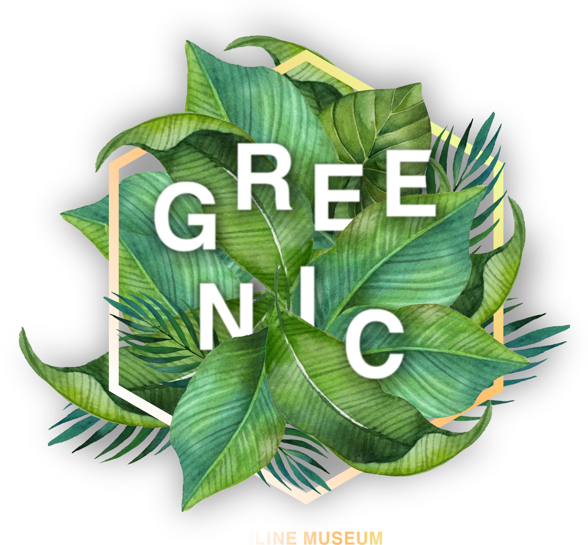
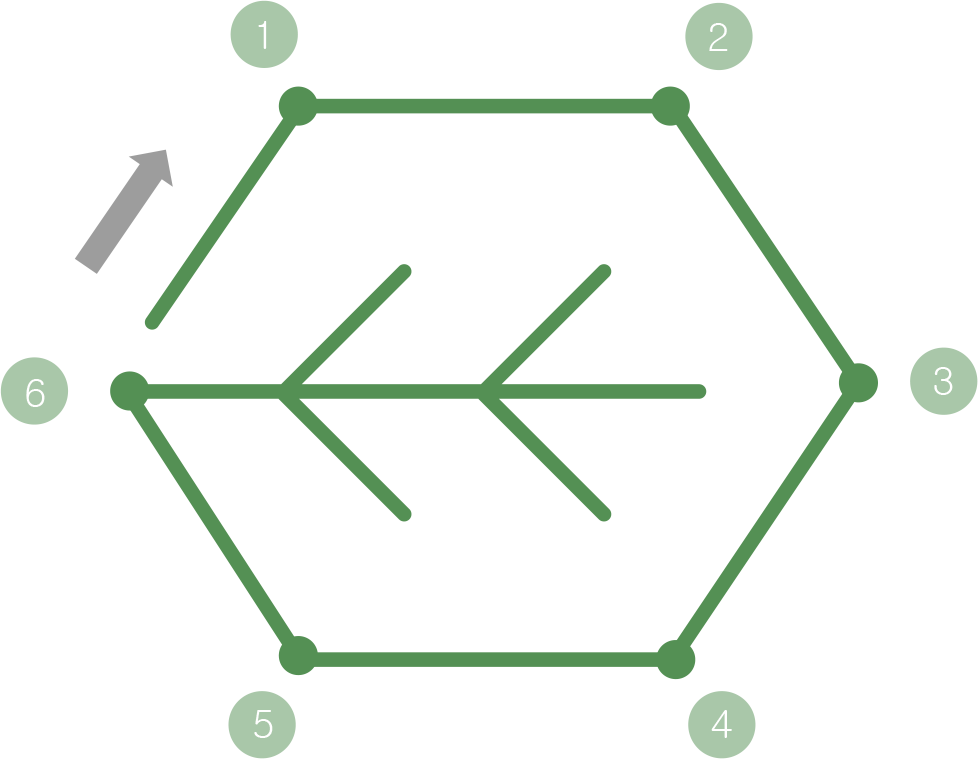
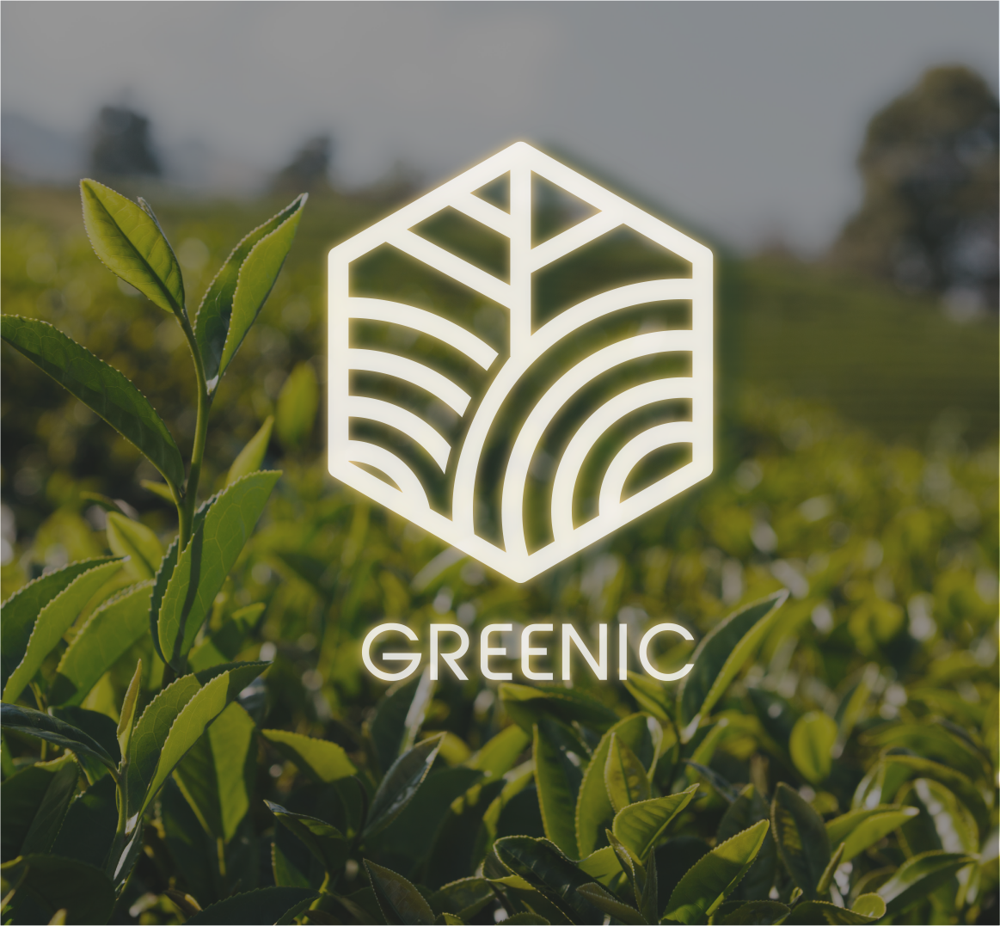
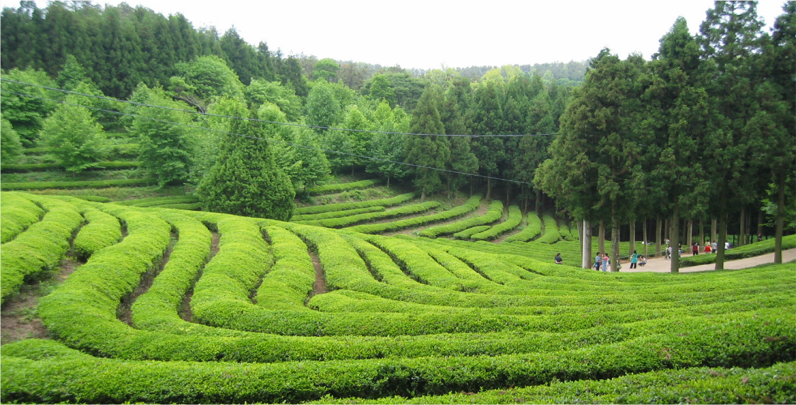
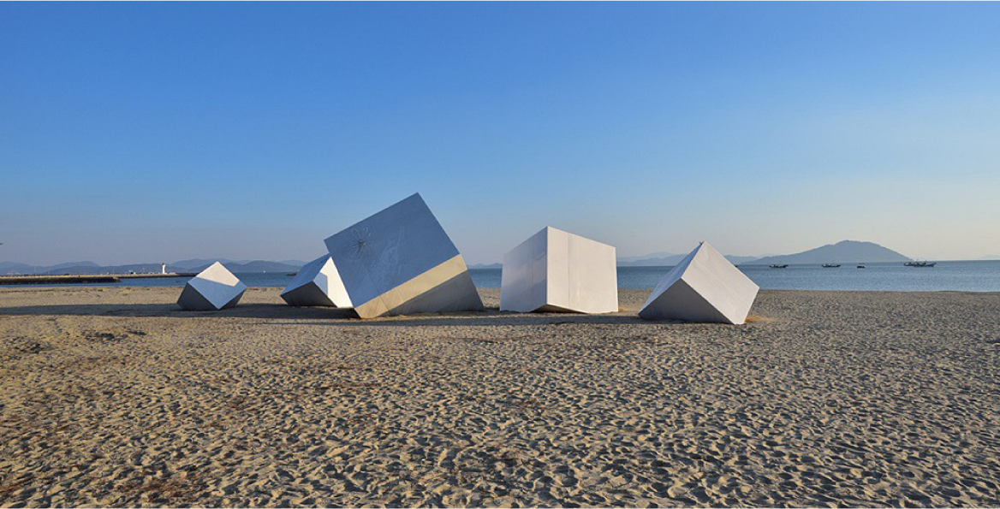
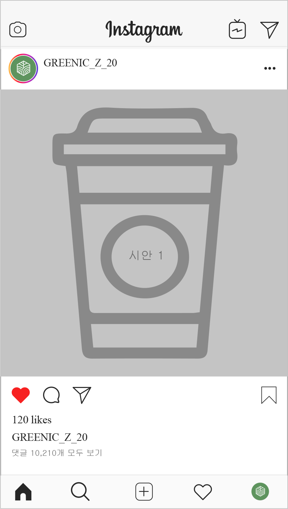

<!DOCTYPE HTML>
<html>
<head>
	<title>GREENIC</title>
	<meta http-equiv="Content-Type" content="text/html" charset="utf-8">
    <meta http-equiv="X-UA-Compatible" content="IE=edge">
    <meta name="apple-mobile-web-app-capable" content="yes" />
    <meta name="apple-mobile-web-app-status-bar-style" content="black" />
    <meta name="format-detection" content="telephone=no" />

	<!-- css -->
    <link href="web/css/reset.css" rel="stylesheet" type="text/css">
    <link href="web/css/common.css" rel="stylesheet" type="text/css">
    <link href="web/css/main.css" rel="stylesheet" type="text/css">

    <!-- <script src="web/js/jquery-3.4.1.js"></script>
    <script src="web/js/script.js"></script> -->
    
</head>
<!-- https://kcompany.co.kr/ -->
<body>
    <div class="header">
        <h1 class="logo"></h1>
        <ul>
            <li><a href="javascript:void(0);">Travel</a></li>
            <li><a href="javascript:void(0);">Brand</a></li>
        </ul>
    </div>
    <div class="contents main">
        <div class="visual">
            <div class="container">
                
                <div class="scroll-downs">
                    <div class="mousey">
                        <div class="scroller"></div>
                    </div>
                </div>
            </div>
        </div>
        <div class="map-wrap">
            <div class="container">
                <h2>GREENIC TEAMUSEUM MAP</h2>
                <p class="headline">온라인 티뮤지엄을 즐기는 순서</p>
                <ul>
                    <li><span>1</span>INTRODUCTION</li>
                    <li><span>2</span>BRAND STORY</li>
                    <li><span>3</span>TOURIST AREAS</li>
                </ul>
                
                <ul>
                    <li><span>4</span>PHOTO ZONE</li>
                    <li><span>5</span>BRANDING</li>
                    <li><span>6</span>TEA CAFE</li>
                </ul>
            </div>
            
        </div>
        <div class="visual02"></div>
        <div class="brand-store">
            <div class="container">
                <div class="l-wrap">
                    
                </div>
                <div class="r-wrap">
                    <h2 class="use-deco">BRAND STORY</h2>
                    <p class="headline">GREENIC의 성장 스토리</p>
                    <p>
                        보성녹차 효능에 대해서 알아보고 먼저 티뮤지엄을 구경하는 것을 추천 합니다. 보성 녹차는 다른 지역에 비해 기후들이 차 나무의 생육 환경이 뛰어난 최적의 상품이 생산된다고 합니다. 산,바다, 호수가 어우러진 지 역으로 해양성 기후와 대륙성 기후가 만나는 지점에서 위치하며 전체적으로 날씨가 온화하고 땅의 배수가 잘 되어 차나무가 아주 잘 자라는 환경임을 알 수 있습니다.  토양이 사양토로 이루어져 있으며 차나무 성장 기에 많은 수분을 공급하여 자연차광에 의한 그늘을 마련하게 됩니다.그러므로 차의 맛이 뛰어난 점을 알 수 있습니다.<br/><br/>
    
                        보성 지역만의 ‘GREENIC’ 티 뮤지엄만의 특별하고 건강한 녹차 잎을 이용하여 보성 녹차를 소개합니다. 보성 녹차만의 건강하고 향긋하고  싱그러운 녹차의 향을 느낄수 있으며 다른 지역보다 특색있으며, 개성 있는 브랜드를 개발하기 위해 노력했습니다. 또한 20-30대 관광객들을 유입하기 위해 브랜드 이미지를 자연스럽게 관심이 생기게끔 제작하였습니다. 온라인을 통하여 쉽게 구경할 수 있게 온라인 뮤지엄을 계속해서 업데이트하도록 하겠습니다.
                    </p>
                </div>
            </div>
        </div>
        <div class="tourist-area">
            <div class="container">
                <div class="l-wrap">
                    <h2 class="use-deco">TOURIST AREAS</h2>
                    <p class="headline">보성의 인기 관광명소 TOP2</p>
                    
                    <h3>대한다원 녹차밭</h3>
                    <p>
                        대한다원 녹차밭의 위치는 보성읍 녹차로 763-65에 있습니다. 전남보성의 상징물과도 같습니다. 가장 유명한 녹차밭이며 ‘여름향기’, ‘푸른 바다의 전설’, ‘역적’ 등 다양한 드라마와 많은 영화 속 촬영지로알려지면서 대표적인 명소로 되었습니다. 대한다원의 매표소를 통과 하면 삼나무 길이 이어져 수채화같은 대한다원이라는 말과 함께 삼나 무 숲길도 구경할 수 있습니다. 1인당 4000원의 성인 기준의 입장료가 있으니 참고바랍니다. 대한다원 안에는 녹차 전문 음식점들도 있 으며 차밭전망대,바다전망대,중앙전망대로 구성되어 있습니다.
                    </p>
                </div>
                <div class="r-wrap">
                    
                    <h3>율포 해수욕장</h3>
                    <p>
                        율포 해수욕장의 위치는 보성읍 보성군 회천면 동율리 544-13에 있습 니다. 아름다운 해변과 솔밭의 운치를 느낄수 있으며 보성 빛축제로 유 명한 장소입니다. 공해 없는 득량만의 청정 해역으로 깨끗한 바다를 즐 길 수 있으며 아름다운 풍광과 고운 모래밭으로 전국 3대 우수해변으로선정되었습니다. 은빛 모래밭에서 소나무들이 숲을 이루면서 풍경으로매력적인 곳입니다. 다섯 개의 네모난 상자의 조형물은 새해의 꿈들을 담은 상자라고 불리며 소망, 행복, 사랑, 기대, 믿음을 정성껏 담은 보성 의 선물이라고 알려져 있습니다. 
                    </p>
                </div>
            </div>
        </div>
        <div class="photozone">
            <div class="container">
                <div class="l-wrap">
                    <h2 class="use-deco">TOURIST AREAS</h2>
                    <p>
                        GREENIC만의 특별한 포토존이며 남녀노소 젊은 관광객들에게 인기 있는 명소를 바탕으로 정보를 정리하여 트렌드한 장소를 개설하였습 니다. 또한 포토존인 만큼 SNS에 업로드 인증 시 관광객들에게 상품 을 나누어주는 이벤트를 실시합니다. 포토존이 전체로 나온 사진들과 친구들,개인, 커플 사진,단체 사진 등을 사진을 찍어 인스타그램으로업로드해주시면 되겠습니다. 포토존 앞에 있는 위치한 부분을 참고하 셔서 이쁘게 사진을 찍어주시면 되겠습니다.
                    </p>
                    <h2 class="use-deco">EVENT</h2>
                    <div class="event-wrap">
                        <p>GREENIC TEA MUSEUM의포토존에 방문한 사진을 인스타그램에 #GREENIC #보령티뮤 지엄 #보령 등 해시태그를 하여올린 후 카페에 찾아주세요.카페음료 또는 상품을 선물들을관광객들에게 나누어드립니다.</p>
                        
                    </div>
                </div>
                <div class="r-wrap">
                    
                </div>
            </div>
        </div>
    </div>
    <div class="footer">
        
    </div>
</body>
</html>
